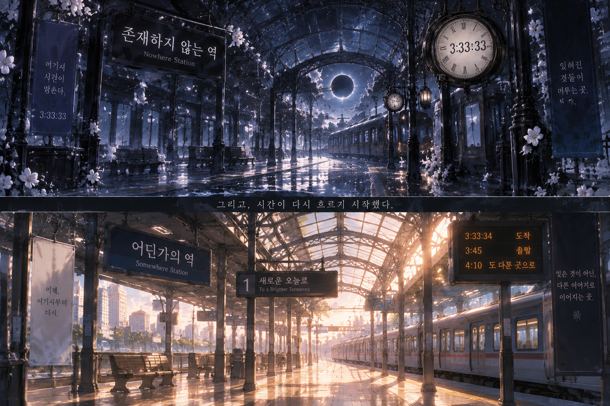

멈춘 시간
역에 도착한 순간 모든 시계가 같은 시간을 가리킨다.
WORLD / 세계관 설명
어느 지도에도 기록되지 않고, 어느 시간표에도 존재하지 않는 역. 이곳의 시계는 언제나 3시 33분 33초를 가리킨다.
플랫폼에는 도착한 승객과 정체를 알 수 없는 기관사뿐이다. 열차는 분명 들어왔지만 어디에서 왔는지 알 수 없고, 출구는 보이면서도 좀처럼 가까워지지 않는다.
역에 도착한 순간 모든 시계가 같은 시간을 가리킨다.
승객 명단에는 오직 당신의 이름만 기록되어 있다.
기관사는 다음 열차를 기다리라고 말하지만 목적지는 알려주지 않는다.

CHARACTER / 캐릭터
캐릭터를 선택하면 프로필과 설정표가 함께 바뀝니다.
SELECT A CHARACTER · 01—05
01 / CONDUCTOR
존재하지 않는 역의 기관사
CHARACTER SHEET / 설정표
STORY PREVIEW / 스토리 미리보기
눈을 뜬 곳은 낯선 플랫폼. 멈춰 있던 초침, 텅 빈 선로, 그리고 처음부터 당신을 기다리고 있었던 듯한 기관사.
“놀라셨겠지요. 하지만 걱정하실 필요는 없습니다. 다음 열차가 올 때까지 제가 곁에 있겠습니다.”
CUTSCENE PREVIEW / 컷씬 미리보기
공개된 장면과 엔딩 일러스트 일부입니다. 이미지를 누르면 원본 비율로 크게 볼 수 있습니다.
NOTICE / 공지사항
세계관, 캐릭터와 스토리 미리보기를 확인할 수 있는 홈페이지가 공개되었습니다.
홈페이지에서 일부 공개 이미지를 큰 화면으로 감상할 수 있습니다.
새로운 소식은 이 페이지를 통해 안내될 예정입니다.
CONTACT / 문의
세계관, 홈페이지, 캐릭터 및 기타 문의 내용을 남길 수 있는 페이지입니다.
※ 현재 버전은 별도의 서버 없이 실행되는 정적 홈페이지이므로 입력 내용은 외부로 전송되지 않습니다.